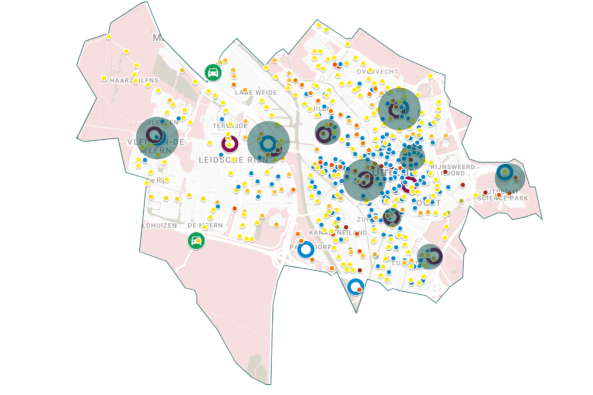

For the Municipality of Utrecht, I developed and carried out a visual spatial research method to identify potential locations for neighbourhood mobility hubs, as part of a wider project by Advier and SVP.
Combining Google My Maps with printed maps and hand-drawn analysis, I mapped public transport connections, existing shared mobility, park-and-ride facilities, walking and cycling accessibility, and key urban destinations. Organising these elements into layers made it possible to explore how different functions related to one another across the city.
I approached the mapping as an exploratory, transparent process: a way to make spatial information accessible and to discuss emerging patterns with the wider project team and municipality.

By comparing the different mapping layers, I investigated where mobility services and important urban destinations clustered. These concentrations helped reveal areas worth exploring as potential locations for neighbourhood mobility hubs.
The method connected the collection of spatial information with a practical next step: identifying promising areas for further assessment. My findings informed the team's evaluation of possible pilot locations alongside additional spatial and accessibility criteria.
The research contributed to a broader advisory report for the Municipality of Utrecht.